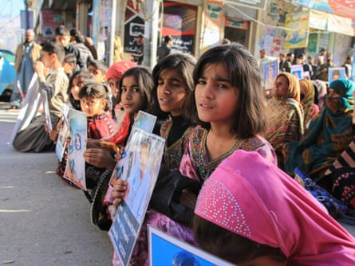
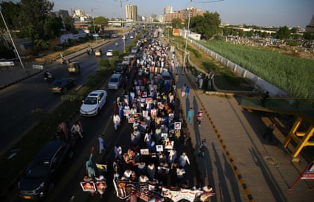
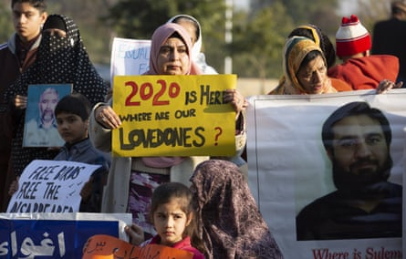
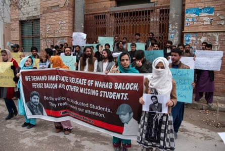
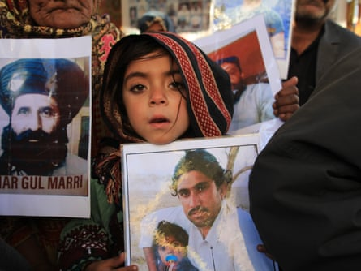
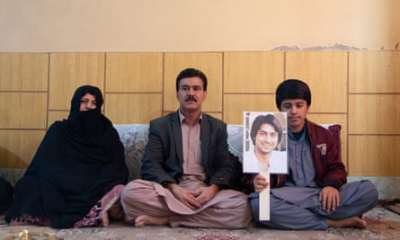

The abductors moved with an ease and stealth that suggested they had done this before. As Qayyum* and his family slept, 12 masked and uniformed soldiers used a ladder to scale the gate of the house, in an affluent neighbourhood of the Pakistani city of Quetta in Balochistan. The family woke as they burst in but the officers silenced them with an order: don’t scream or we will beat you. One demanded Qayyum’s national identity card.
“Bring your phone and laptop,” barked an officer. A bag was shoved over Qayyum’s head and he was dragged outside and thrown into the back of a car.
Qayyum, a Pakistani government official, did not know why he had been seized, but he knew what was happening. Extrajudicial abductions and enforced disappearances by shadowy military agencies have been a feature of life in Pakistan for two decades. Those suspected of having ties to terrorists, insurgents or activists are picked up and taken to secret detention centres, without trial or official judicial process. Here they face days, months or even years of torture. Some are eventually released, but most are never seen again.
Those weeks in August 2014 were the worst of Qayyum’s life. Deep in a covert detention centre, he was left outside the torture cell to listen as four others were beaten. One after another, the men were brought out, unconscious, bloody and limp, carried on the shoulders of masked men, until finally it was his turn.
“Once I entered the torture cell, a soldier was told to strip me,” says Qayyum. “I started begging them not to dishonour me, I was crying and pleading, ‘please don’t disgrace me’. I was laid down on the floor and someone started hitting my buttocks with a leather belt.”
Qayyum never saw their faces. They whipped him until he was bleeding all over, and broke his fingers. “I felt then I was already dead, that I could never live having suffered such humiliation.” Like the others before him, Qayyum left the torture cell unconscious.
Families hold a protest against enforced disappearances in Quetta, Balochistan, where, despite assurances, the practice continues
But the next night after prayers he was taken back to the cell, and this time the officers had specific questions: what he knew about four security personnel killed in Quetta, and whether he had met with a man called M*.
“The interrogator kept asking ‘Who is M? When did you last meet him?’,” says Qayyum. “I replied that there must be some miscommunication, I do not know this person, I’m not the person you require. Suddenly he gave me an electric shock on my testicles. I fell and he kept giving me electric shocks around my head, face and neck.”
Some nights his head was plunged into buckets of icy water, pushing him to the brink of drowning, all the while asking him the same questions he could not answer. But Qayyum still considered himself one of the lucky ones: after weeks of torture, the officers finally let him go, dumping him on the streets of Quetta at night with a warning never to speak of what had happened. “I was not the person they were looking for but those weeks in a torture cell killed my spirit and ambition,” he says. “I was brought back as a dead body.”
Families of the missing hold a protest march in Karachi in October.Photograph: Shahzaib Akber/EPA
“Disappearing” is nothing new in Pakistan , justified by the military as an essential tool of national security in a country which has seen thousands die in attacks by Islamic militants and separatist insurgents. It began in the 1970s but became a standard practice of Pakistan’s security agencies, in particular the shadowy spy agency Inter-Services Intelligence (ISI), after 2001. As Pakistan became central to the US “war on terror”, ISI and paramilitary forces rounded up hundreds of suspected al-Qaida militants for the US administration, who secretly shipped them to Guantánamo Bay.
Human rights groups have documented how widespread and entrenched the practice has become, particularly by ISI which has been accused of operating a “state within a state” in Pakistan and is reported to employ more than 10,000 operatives, most serving army officers. Abduction targets are suspected Islamic or separatist militants but also political opponents, activists, students, politicians, human rights defenders, journalists and lawyers, all picked up without due process and no information given to the family left behind.
The question that haunts Pakistan is why extrajudicial kidnappings and torture continue, even as the country has made the transition from the military dictatorships and coups that had defined the nation since its formation in 1947, to the democratic civilian governments in power since 2008. In opposition, Imran Khan repeatedly pledged to end the practice, but since he became prime minister in 2018, the disappearances have continued – some say escalated – while accountability seems as elusive as ever.
According to the UN Working Group on Enforced and Involuntary Disappearances, they have 1144 cases of allegations of enforced disappearances from Pakistan between 1980 and 2019, with 731 still missing. However, these numbers barely scratch the surface: most cases never reach the UN.
Pakistan’s security agencies regularly deny complicity in disappearances. In the rare court hearings that have occurred, ISI and military officers have maintained that victims are hiding out in the mountains or were killed by the Taliban.
ISI declined to comment on the record. But one high ranking security official spoke on condition of anonymity. “It is wrong to say these people were disappeared,” he said. “They are people who get killed when they attack us [the military] on border posts or get killed in Afghanistan and border regions; they are insurgents and terrorists who have been put in jail or run away to be an illegal immigrant in Europe and died en route. It is politicians who stir up the issue to play to people’s emotions.”
State-led efforts to tackle the issue have failed. In 2006, the supreme court began hearing cases about Pakistan’s “disappeared” but then a state of emergency was declared by then-prime minister Pervez Musharraf less than a year later and all judges deposed.
In 2011, Pakistan set up the Commission of Inquiry on Enforced Disappearances, with a mandate to trace the missing and hold those responsible for the disappearances to account. In September this year a damning report by the International Commission of Jurists (ICJ) starkly highlighted that in nine years the commission had failed to hold a single perpetrator responsible.
“Enforced disappearances not just continue to take place here, they have reached a level of brazenness inconceivable a few years ago,” says the ICJ.
Family members of missing persons demonstrate in Islamabad, the Pakistani capital, in December 2019.Photograph: BK Bangash/AP
Pakistan military’s power and influence remain sacrosanct. In opposition, Khan was seen as deferential to the army, and the backing of the military helped him to power in 2018. Khan’s administration has still not criminalised, nor ratified the UN convention against, enforced disappearances. In June, the Balochistan National Party (BNP) quit its alliance with Khan’s ruling PTI party over the prime minister’s broken promise to put an end to the disappearances.
The culture of impunity is further fuelled by the widespread censorship of Pakistan’s media , which has worsened under Khan due to the free rein given to the military. Journalists, fearful of abduction themselves, feel unable to freely report on the subject.
Among the prominent victims during Khan’s tenure is Idris Khattak , a human rights defender and champion of missing persons, kidnapped in November 2019. After international pressure, in a rare admission of involvement in a forced disappearance, the military admitted Khattak was in its custody. He has still not been released.
Amina Masood Janjua, whose husband Masood Janjua has been missing since 13 July 2005, railed against what she saw as Khan’s hypocrisy. In opposition she had met Khan and been promised justice. “Imran Khan told me that if he becomes prime minister not a single person would go missing,” she says. “But after coming into power, Khan never replied to any of the letters I wrote him.”
Balochistan, Pakistan’s resource-rich but troubled state which borders Iran and Afghanistan, has long been the centre of enforced disappearances, used to crush the province’s ongoing bloody insurgency. Anyone suspected of separatist sympathies is picked up, usually by security agencies or the paramilitary Frontier Corps.
According to Voice for Baloch Missing Persons (VBMP), a human rights organisation, more than 6,000 people are still missing from Balochistan. Since 2009, 1,400 people who were abducted by security forces have been found dead, their bodies riddled with bullets and drill holes, or bearing signs of torture and mutilation.
Students protest against the abduction of two of their fellows in front of the press club in Quetta, Balochistan
As insurgent activity has increased in Balochistan over the past 18 months, so too have the disappearances . Between January and August of 2020, 139 people were forcibly abducted from Balochistan, while only 84 have been released.
Dr Abdul Malik, former chief minister of Balochistan, says that the “warlike” situation in Balochistan means that “just and unjust people get abducted. These people are abducted by the security forces, though they never admit to doing it.” A Balochistan state government spokesperson says they “recognise the issue and are resolving it. Around 4,000 people have been released.”
In Sindh province, where the government recently banned several nationalist organisations, 152 people, mostly political activists, are registered as missing, according to the organisation, Voice For Missing Persons of Sindh . In the region’s main city of Karachi, about 250 kidnap victims have never been seen again, said Asad Butt of the human rights commission of Pakistan. Currently a dozen relatives of Sindh’s disappeared are marching the 1,500 miles from Karachi to the capital Islamabad to demand answers and justice from the government, a protest walk that will take three months.
It is an issue that haunts the former Federally Administered Tribal Areas (FATA) of Pakistan, a war-torn and formerly autonomous area, devastated by domestic and foreign military offensives, and a longstanding hub for terrorist groups such as the Taliban.
Political activist Manzoor Pashteen recently began a movement to highlight disappearances in the region. “Since the military operations began in former FATA in 2007-2008, around 8,000 people have been abducted and only 1,500 have been released,” he says. Pashteen says the disappearances continue unchallenged because “the issue can’t be resolved without punishing the perpetrators and they know they are above the law”.
“Whenever anyone talks against the enforced disappearances – lawyers, activists, journalists and politicians – they all get threatened, abducted and sometimes killed,” Pashteen says. “What can be more cruel than this?”
In Balochistan’s capital Quetta, so many families have experienced a relative being abducted that a protest camp has been a mainstay of the city for more than a decade. Dozens gather daily with crumpled photos of fathers, sons and brothers who have disappeared. Among them Bibi Ganj Malik, whose son Ghulam Farooq was abducted, allegedly by security agencies, on 2 June 2015.
“Authorities should present Farooq in the court of law. If my son has committed any crime or found guilty, he should be punished. But at least, don’t hide him in dark torture cells,” she says. Malik never saw her son again: she died soon after speaking to the Guardian.
In 2013, a group from the Quetta camp marched 1,500 miles to Islamabad to demand the release of family members but they faced threats and police intimidation along the way.
Meanwhile, the body count keeps rising. In September, in Chaghi, Balochistan, a decomposed body was found. Hafeezullah Mohammed Hasni was abducted from his home on 30 August 2016, and a military officer demanded 6.8m rupees for his release. Though the family paid the money and the officer was later imprisoned for corruption, Hasni was still not released. Every day for the past four years, his daughter Muqaddas, only a year old when her father was taken, had stood at the protest camp in Quetta holding his picture.
Muqaddas, daughter of Hafeezullah Mohammed Hasni, who disappeared in 2016 when she was one. His decomposed body has since been found
The coroner said Hasni had been dead for at least three years. His mother fainted at the news and it was his brother who had to identify the mutilated body. “His clothes, shoes, socks, are the same that he wore that day,” was all his brother Nematullah could utter.
For many, the agony is compounded by the fact they never recover a body. Abdul Wahid, a professor of English in Quetta, spoke of the pain of not knowing what happened to his son Rehmatullah, who was abducted on 18 January 2015 as he drove home in the days before his upcoming wedding. Wahid believes the paramilitary Frontier Corps is responsible, but has not registered an official case into his kidnapping.
“There are thousands of registered cases of enforced disappearances,” says Wahid, his voice shaking with grief. “Has anyone got justice from courts and police? We can’t fight the powerful and so we just pray that they release my son.”
Pausing to wipe away tears, he says: “It is terrifying that I don’t know whether my son is alive or dead. I have to lie to my parents that their grandson will come back soon.”
Prof Wahid with his wife and youngest son, who is holding a picture of Rehmatullah, missing since 18 January 2015
For the thousands of wives and fiancées of men who disappear, life remains in limbo. Tradition dictates that they cannot remarry or break their engagement without a body, so they are often outcast from society, neither a wife nor a widow. Rehana, fiancée of missing Rehmatullah, has been waiting more than five years. “We were both so happy that we were going to get married, but all of a sudden everything vanished,” says Rehana. “I pray to God he’s safe and comes back. I am waiting for him.”
Human rights minister Shireen Mazari said a bill criminalising enforced disappearances in progress. “We have drafted a bill. Law ministry has it. Consultation is going on with all stakeholders on this,” says Mazari.
However, the Guardian understands the law ministry has made multiple objections to the bill, and it has not been presented to parliament.
For those who do return, the fear and information blackout around the abductions can be hard to bear. Many suffer post-traumatic stress. Mamnoon* was picked up by paramilitaries during dinner with friends at a crowded hotel in Karachi in October 2017.
After two days of beatings and torture for information on a man he barely knew, Mamnoon was locked in a small dark cell on his own, where he felt himself drift into madness. “I saw nobody except one person used to visit me and tell me I was finished, that they will kill me and throw away my dead body,” he says.
After a year in isolation, Mamnoon was released but flashbacks regularly take him back to that dark cell. He has no expectation of justice. “This is my second life,” he says.
*Names have been changed to protect identities
Sign up for the Global Dispatch newsletter – a fortnightly roundup of our top stories, recommended reads, and thoughts from our team on key development and human rights issues: